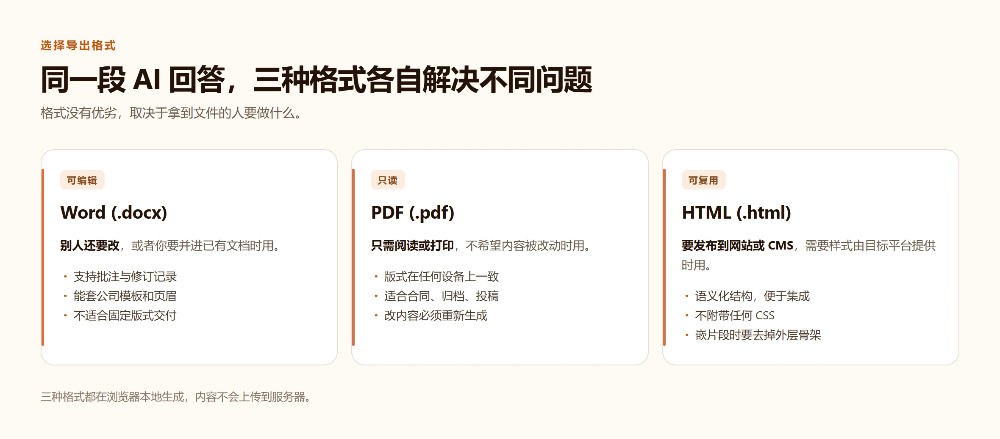

AI 内容整理指南
如何保存 AI 回答为 Word、PDF 或 Markdown？
AI 生成的内容适合继续编辑、分享或沉淀为知识库。选择合适的导出格式，能让这些内容真正进入工作流。

需要正式编辑：导出 Word
方案、报告和会议纪要适合导出为 Word。你可以保留 AI 内容的标题层级，再在 Word 中补充封面、批注或企业模板。
需要分享或归档：导出 PDF
PDF 适合发送给同事、客户或用于打印。导出前先检查预览，确保内容层级和表格符合预期。
需要建立知识库：使用 Markdown
表格资料和 AI 内容可转为 Markdown，再导入 Obsidian、Notion 或其他知识库工具，方便检索和二次使用。
安全建议
处理包含敏感信息的内容时，优先选择浏览器本地转换工具，避免把文件上传到不必要的服务器。
先定格式，再选工具
多数导出问题出在格式选错了，而不是工具不好用。四种去处基本覆盖了所有情况。
| 接下来要做什么 | 合适的输出 | 原因 |
|---|---|---|
| 同事要修改或批注 | Word（.docx） | 修订记录和批注只存在于可编辑文档里 |
| 存档或发给客户 | 在任何设备上版式都不变 | |
| 发到博客或落地页 | HTML | 保留语义标签，方便套用站点样式 |
| 长期保存的笔记 | Markdown | 纯文本，任何编辑器和版本管理都能读 |
最容易踩的三个坑
- 直接把聊天窗口打印成 PDF，会把站点头部、侧边栏和对话气泡一起印进去。
- 截图再存成 PDF，得到的是图片，之后既不能搜索也不能复制文字。
- 把富文本直接粘进 Word，会带着网页字体，和文档自身的样式打架。
导出前的检查清单
- 删掉回答里不需要的部分——模型很少只输出你要的那一段。
- 确认标题层级：整篇一个一级标题，下面逐级嵌套。
- 在预览里看一眼表格和代码块，这两类元素最容易出错。
关于格式选择的问题
发给客户应该选哪种格式？
PDF。版式在任何设备上都一致，也不会被误改。
为什么不能直接打印聊天窗口？
打印结果会带上站点头部、对话气泡，通常还有页面地址，这些都不该出现在交付物里。
同一段内容能导出两次吗？
可以。输入框里的内容会保留，先导 Word 再导 PDF 都行。